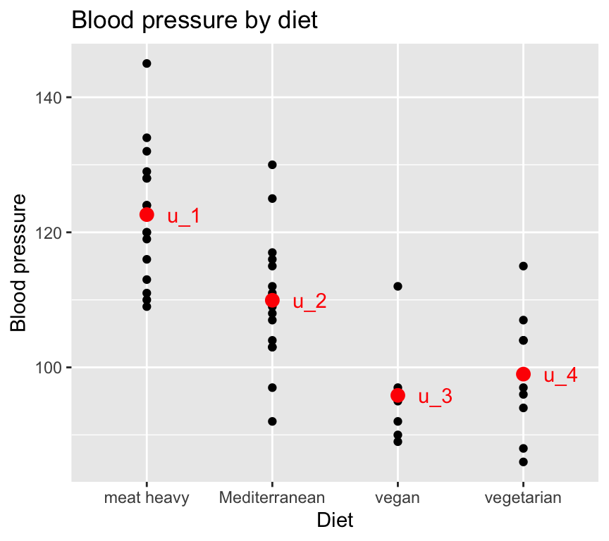
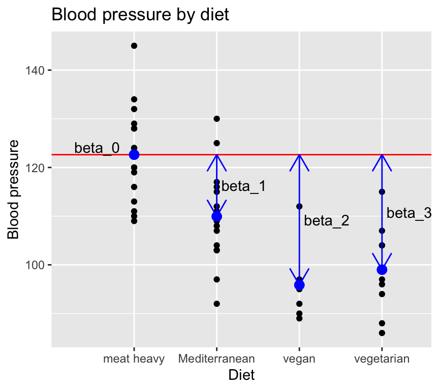
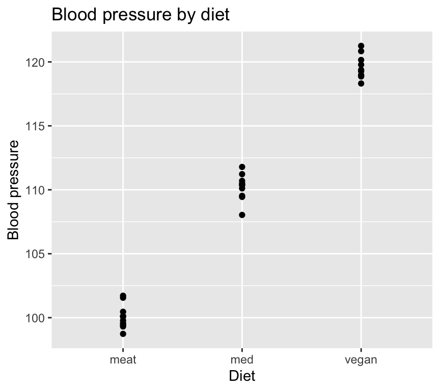
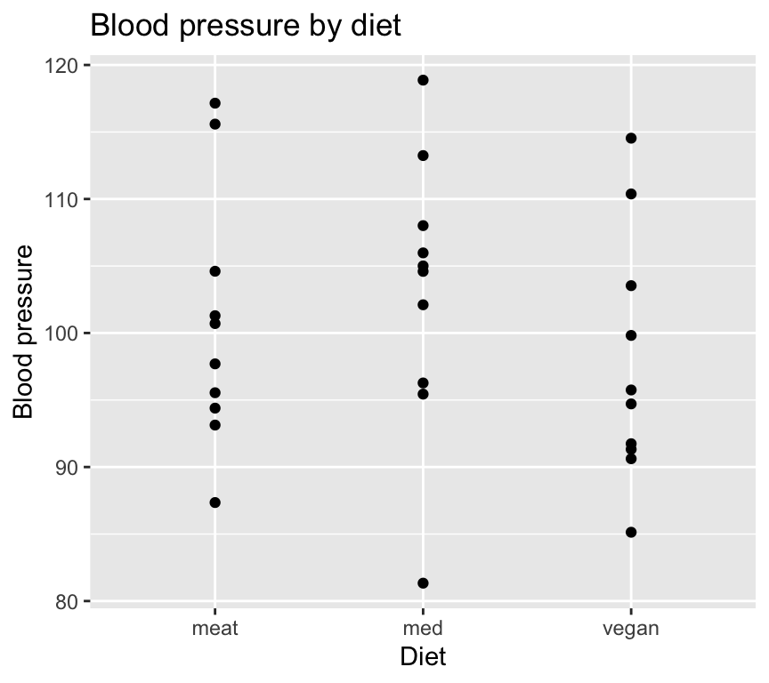
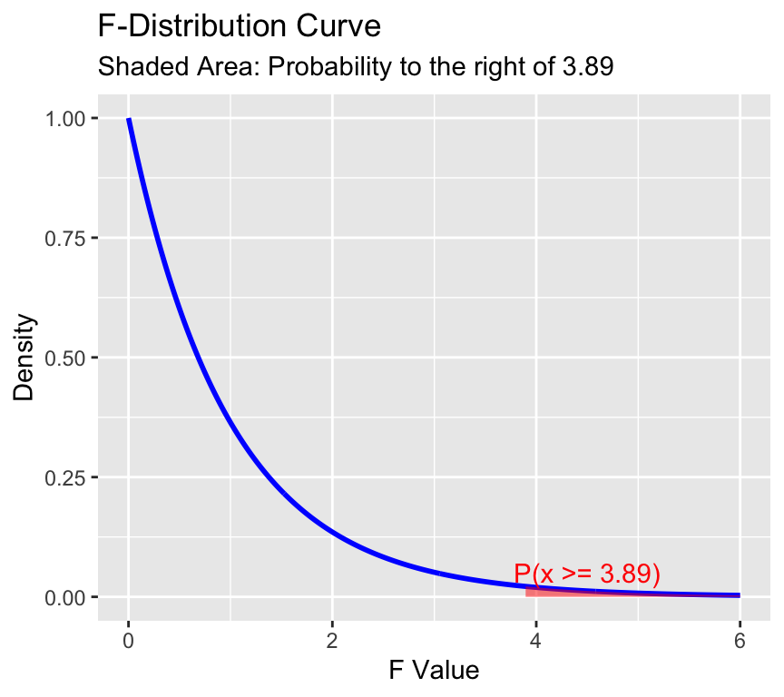
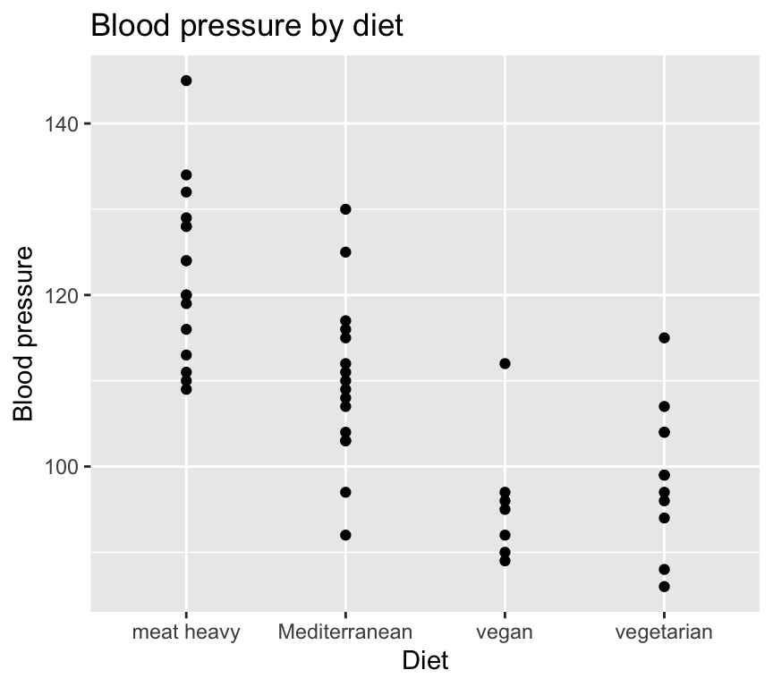
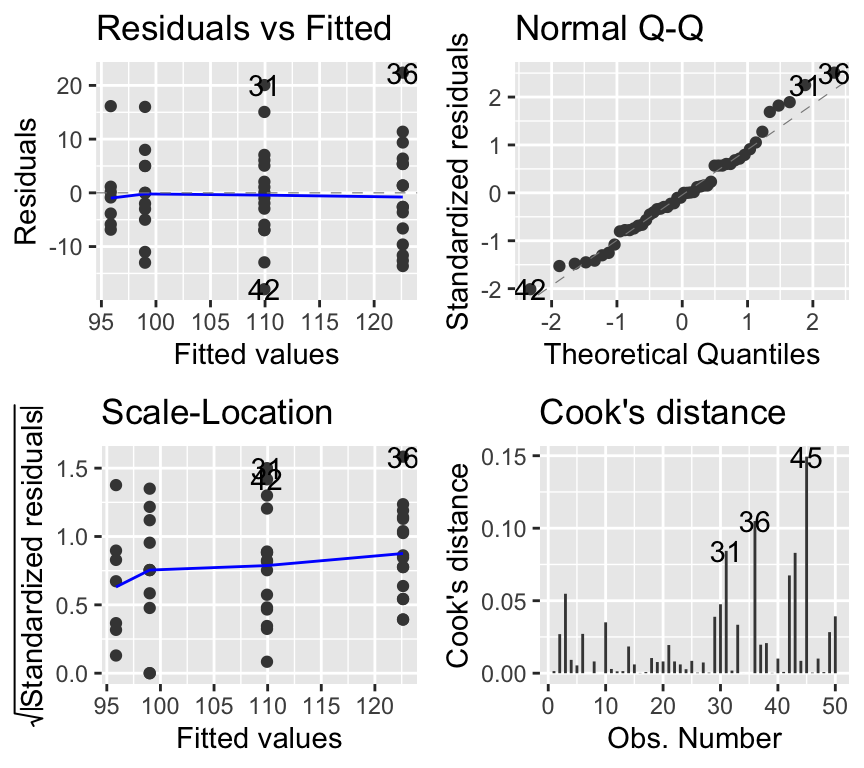
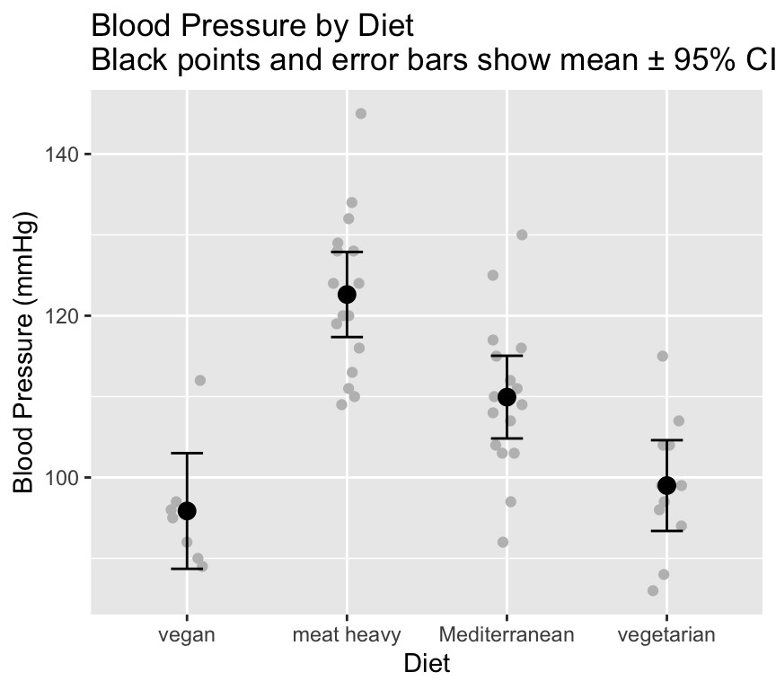

The previous two chapters were about linear regression. Linear regression is a type of linear model – recall that in R we used the function lm() to make the regression model. In this chapter we will look at a different type of linear model: analysis of variance (ANOVA).
Introduction
Recall that linear regression is a linear model with one continuous explanatory (independent) variable. A continuous explanatory variable is a variable in which values can take any value within a range (e.g., height, weight, temperature).
In contrast, analysis of variance (ANOVA) is a linear model with one or more categorical explanatory variables. We will first look at a one-way ANOVA, which has one categorical explanatory variable. Later (in a following chapter) we will look at two-way ANOVA, which has two categorical explanatory variables.
What is a categorical variable? A categorical explanatory variable is a variable that contains values that fall into distinct groups or categories. For example, habitat type (e.g., forest, grassland, wetland), treatment group (e.g., control, low dose, high dose), or diet type (e.g., vegetarian, vegan, omnivore).
This means that each observation belongs to one of a limited number of categories or groups. For example, in a study of how blood pressure varies with diet type, diet type is a categorical variable with several levels (e.g., vegetarian, vegan, omnivore). A person can only belong to one diet type category.
Here are the first several rows of a dataset that contains blood pressure measurements for individuals following different diet types:
Rows: 50 Columns: 3
── Column specification ────────────────────────────────────────────────────────
Delimiter: ","
chr (2): diet, person_ID
dbl (1): bp
ℹ Use `spec()` to retrieve the full column specification for this data.
ℹ Specify the column types or set `show_col_types = FALSE` to quiet this message.
# A tibble: 6 × 3
bp diet person_ID
<dbl> <chr> <chr>
1 120 meat heavy person_1
2 89 vegan person_2
3 86 vegetarian person_3
4 116 meat heavy person_4
5 115 Mediterranean person_5
6 134 meat heavy person_6
There are three variables: - bp: blood pressure (continuous response variable) - diet: diet type (categorical explanatory variable) - person_ID: unique identifier for each individual (not used in the analysis)
Note that the diet variable is of type <chr> which is short for character. In R, categorical variables are often represented as factors.
As usual, its a really good idea to visualise the data in as close to “raw” form as possible before doing any analysis. We’ll make a scatterplot of blood pressure versus diet type.
We just used geom_jitter() instead of geom_point() to make a scatterplot. This is because geom_jitter() adds a small amount of random noise to the points, which helps to prevent overplotting when multiple points have the same value (which is common when the x-axis is categorical).
When we use geom_jitter(), we can specify the amount of noise to add in the x and y directions using the width and height arguments, respectively. We must be very careful to not add noise to the y direction if we care about the actual y values (e.g., blood pressure). In this case, we only added noise in the x direction by setting height = 0 to separate the points just enough, but not so much that we could get confused about which of the diets they belong to.
Looking at this graph it certainly looks like diet type has an effect on blood pressure. But is this effect statistically significant? In other words, are the differences in mean blood pressure between diet types larger than we would expect due to random variation alone?
Analysis of variance (ANOVA) is a statistical method that can help us answer this question, and also others.
How does it look like in R?
We can fit a one-way ANOVA model in R using the same lm() function that we used for linear regression. The only difference is that the explanatory variable is categorical.
anova_model <-lm(bp ~ diet, data = bp_data_diet)
Then instead of using summary() to look at the results, we use the anova() function.
anova(anova_model)
Analysis of Variance Table
Response: bp
Df Sum Sq Mean Sq F value Pr(>F)
diet 3 5274.2 1758.08 20.728 1.214e-08 ***
Residuals 46 3901.5 84.82
---
Signif. codes: 0 '***' 0.001 '**' 0.01 '*' 0.05 '.' 0.1 ' ' 1
This is an ANOVA table. It shows us the sources of variation in the data, along with their associated degrees of freedom (Df), sum of squares (Sum Sq), mean square (Mean Sq), F value, and p-value (Pr(>F)) associate with a getting a F value the same as or greater than the observed F value if the null hypothesis were true.
The challenge now is to understand what all of these values mean! Let’s take it step by step.
What is ANOVA?
Analysis of variance is a method to compare whether the observations (e.g., of blood pressure) differ according to some grouping (e.g., diet) that the subjects (e.g., people) belong to.
We already know a lot about analysing variance: we compared the total sum of squares (SST), model sum of squares (SSM) and the residual sum of squares (SSE) in the context of linear regression. We used these to calculated the \(R^2\) value. The \(R^2\) value tells us how much of the total variance in the response variable (e.g., blood pressure) is explained by the explanatory variable (e.g., diet).
The same applies to analysis of variance (ANOVA) (as well as regression) because ANOVA is a special case of a linear model, just like regression is also a special case of a linear model.
The defining characteristic of ANOVA is that we are comparing the means of groups by analysing variances. Put another way, we will have a single categorical explanatory variable with two or more levels. We will test whether the means of the response variable are the same across all levels of the explanatory variable, and we test this by analysing the variances.
When we have only one categorical explanatory variable, we use a one-way ANOVA. When we have two categorical explanatory variables, we will use a two-way ANOVA (we’ll look at this in a subsequent chapter).
ANOVA as a linear model
Just like linear regression, ANOVA can be expressed as a linear model. The key difference is that in ANOVA, the explanatory variable is categorical rather than continuous.We formulate the linear model as follows:
\[y_{ij} = \mu_j + \epsilon_{i}\]
where:
\(y_{ij}\) = Blood pressure of individual \(i\) with diet \(j\)
\(\mu_i\) = Mean blood pressure of an individual with diet \(j\)
\(\epsilon_{i}\sim N(0,\sigma^2)\) is an independent error term.
Graphically, with the blood pressure and diet data, this looks like:

Note
There is lots of hidden code used to create the data used in the graph above, and to make the graph itself. You can see the code by going to the Github repository for this book.
Rewrite the model
We usually use a different formulation of the linear model for ANOVA. This is because we usually prefer to express the estimated parameters in terms of differences between means (rather than the means themselves). The reason for this is that then the null hypothesis can be that the differences are zero.
To proceed with this formulation, we define one of the groups as the reference group, and make the mean of that equal to the intercept of the model. For example, if we choose the “meat heavy” diet as the reference group, we can write:
\[\mu_{meat} = \beta_0\]
And then to express the other group means as deviations from the reference group mean:
\[y_i = \beta_0 + \beta_1 x_i^{1} + \beta_2 x_i^{2} + \beta_3 x_i^{3} + \epsilon_i\] where: \(y_i\) is the blood pressure of individual \(i\). \(x_i^{1}\) is a binary variable indicating whether individual \(i\) is on the Mediterranean diet. \(x_i^{2}\) is a binary variable indicating whether individual \(i\) is on the vegan diet. \(x_i^{3}\) is a binary variable indicating whether individual \(i\) is on the vegetarian diet.
Graphically, the model now looks like this:

Here is something to warp you mind… we described one-way ANOVA as a linear model with one categorical explanatory variable. But as you can see above, we can also describe it as a linear model with multiple binary explanatory variables (one for each group except the reference group). And when we make a linear model in R it really does create multiple binary explanatory variables behind the scenes. So one-way ANOVA and multiple linear regression with multiple binary explanatory variables are really the same thing! And, even more mind-warping, one-way ANOVA and multiple regression (regression with multiple continuous explanatory variables) are also the same thing! So when we look at multiple regression later in the course, you can think of it as just an extension of one-way ANOVA.
The ANOVA test: The \(F\)-test
Aim of ANOVA: to test globally if the groups differ. That is we want to test the null hypothesis that all of the group means are equal:
\[H_0: \mu_1=\mu_2=\ldots = \mu_g\] This is equivalent to testing if all \(\beta\)s that belong to a categorical variable are = 0.
\[H_0: \beta_1 = \ldots = \beta_{g-1} = 0\] The alternate hypothesis is that \({H_1}\): The group means are not all the same.
A key point is that we are testing a null hypothesis that concerns all the groups. We are not testing if one group is different from another group (which we could do with a \(t\)-test on one of the non-intercept \(\beta\)s).
Because we are testing a null hypothesis that concerns all the groups, we need to use an \(F\)-test. It asks if the model with the group means is better than a model with just the overall mean.
Note
The \(F\)-test is called the “\(F\)-test” because it is based on the \(F\)-distribution, which was named after the statistician Sir Ronald A. Fisher. Fisher developed this statistical method as part of his pioneering work in analysis of variance (ANOVA) and other fields of experimental design and statistical inference.
Actually, the \(F\)-test does not directly test the null hypothesis that all the group means are equal. Instead, it tests whether the model that includes the group means explains significantly more variance in the data than a model that only includes the overall mean (i.e., without considering group differences).
The \(F\)-test does this by comparing two variance estimates: the variance explained by the group means (between-group variance) and the variance that remains unexplained within each group (within-group variance).
Interpretation of the \(F\) statistic
The \(F\)-test involves calculating from the observed data the value of the \(F\) statistic, and then computing if that value is large enough to reject the null hypothesis.
The \(F\) statistic is a ratio of two variances: the variance between groups, and the variance within groups.
Here is an example with very low within group variability, and high between group variability:

And here’s an example with very high within group variability, and low between group variability:

So, when the ratio of between group variance to within group variance is large, the group means are very different compared to the variability within groups. This suggests that the groups are different.
When the ratio is small, the group means are similar compared to the variability within groups. This suggests that the groups are not different.
\(F\) increases
when the group means become more different, or
when the variability within groups decreases.
\(F\) decreases
when the group means become more similar, or
when the variability within groups increases.
\(\rightarrow\) The larger \(F\), the less likely are the data seen under \(H_0\).
Calculating the \(F\) statistic
Recall that the \(F\) statistic is a ratio of two variances. Specifically, it is the ratio of two mean squares (MS):
\(MS_{model}\): the variability between groups.
\(MS_{residual}\): the variability within groups.
\(MS\) stands for Mean Square, and is a variance estimate.
The \(F\) statistic is calculated as:
\[F = \frac{MS_{model}}{MS_{residual}}\]
To find the mean squares, we need to calculate the within and the between group sums of squares, and the corresponding degrees of freedom. Let’s go though this step by step.
Calculating the sums of squares
First we get the total sum of squares (SST), which quantifies the total variability in the data. This is then split into the explained variability (SSM), and the residual variability (SSE).
Total variability: SST = \(\sum_{i=1}^k \sum_{j=1}^{n_i} (y_{ij}-\overline{y})^2\)
where:
\(y_{ij}\) is the blood pressure of individual \(j\) in group \(i\)
\(\overline{y}\) is the overall mean blood pressure
\(n_i\) is the number of individuals in group \(i\)
And now we need the degrees of freedom for each sum of squares:
SST degrees of freedom: \(n - 1\) (total degrees of freedom is number of observations \(n\) minus 1)
SSM degrees of freedom: \(k - 1\) (model degrees of freedom is number of groups \(k\) minus 1)
SSE degrees of freedom: \(n - k\) (residual degrees of freedom is total degrees of freedom \(n - 1\) minus model degrees of freedom \(k - 1\))
Total degrees of freedom
The total degrees of freedom are the degrees of freedom associated with the total sum of squares (\(SST\)).
In order to calculate the \(SST\), we need to calculate the mean of the response variable. This implies that we estimate one parameter (the mean of the response variable). As a consequence, we lose one degree of freedom and so there remain \(n-1\) degrees of freedom associated with the total sum of squares (where \(n\) is the number of observations).
What do we mean by “lose one degree of freedom”? Imagine we have ten observations. We can calculate the mean of these ten observations. But if we know the mean and nine of the observations, we can calculate the tenth observation. So, in a sense, once we calculate the mean, the value of one of the ten observations is fixed. This is what we mean by “losing one degree of freedom”. When we calculate and use the mean, one of the observations “loses its freedom”.
For example, take the numbers 1, 3, 5, 7, 9. The mean is 5. The sum of the squared differences between the observations and the mean is \((1-5)^2 + (3-5)^2 + (5-5)^2 + (7-5)^2 + (9-5)^2 = 20\). This is the total sum of squares. The degrees of freedom are \(5-1 = 4\).
The total degrees of freedom are the total number of observations minus one. That is, the total sum of squares is associated with \(n-1\) degrees of freedom.
Another perspective in which to think about the total sum of squares and total degrees of freedom is to consider the intercept only model. The intercept only model is a model that only includes the intercept term. The equation of this model would be:
\[y_i = \beta_0 + \epsilon_i\] The sum of the square of the residuals for this model is minimised when the predicted value of the response variable is the mean of the response variable. That is, the least squares estimate of \(\beta_0\) is the mean of the response variable:
\[\hat{\beta}_0 = \bar{y}\]
Hence, the predicted value of the response variable is the mean of the response variable. The equation is:
\[\hat{y}_i = \bar{y} + \epsilon_i\]
The error term is therefore:
\[\epsilon_i = y_i - \bar{y}\] And the total sum of squares is:
\[SST = \sum_{i=1}^n (y_i - \bar{y})^2\]
where \(\hat{y}_i\) is the predicted value of the response variable for the \(i\)th observation, \(\bar{y}\) is the mean of the response variable, and \(\epsilon_i\) is the residual for the \(i\)th observation.
The intercept only model involves estimating only one parameter, so the total degrees of freedom are the total number of observations minus one \(n - 1\).
Therefore, the total degrees of freedom are the total number of observations minus one.
Bottom line: \(SST\) is the residual sum of squares when we fit the intercept only model. The total degrees of freedom are the total number of observations minus one.
Model degrees of freedom
The model degrees of freedom are the degrees of freedom associated with the model sum of squares (\(SSM\)).
In the case of the intercept only model, we estimated one parameter, the mean of the response variable.
In the case of a categorical variable with \(k\) groups, we need \(k-1\) parameters (non intercept \(\beta\) parameters), so we lose \(k-1\) degrees of freedom. Put another way, when we fit a model with a categorical explanatory variable with \(k\) groups, we estimate \(k-1\) parameters in addition to the intercept. That is, we estimate the difference between each group and the reference group.
Each time we estimate a new parameter, we lose a degree of freedom.
Residual degrees of freedom
The residual degrees of freedom are the total degrees of freedom (\(n-1\)) minus the model degrees of freedom (\(k-1\)).
Therefore, the residual degrees of freedom are the degrees of freedom remaining after we estimate the intercept and the other \(\beta\) parameters. There is one intercept and \(k-1\) other \(\beta\) parameters, so the residual degrees of freedom are \(n-1- ( k-1) = n - k\).
Calculating the mean square and \(F\) statistic
From these sums of squares and degrees of freedom we can calculate the mean squares and \(F\)-statistic:
Why divide by the degrees of freedom? The more observations we have, the greater will be the total sum of squares. The more observations we have, the greater will be the residual sum of squares. So it is not very informative to compare totals. Rather, we need to compare the mean of the sums of squares. Except we don’t calculate the mean by dividing by the number of observations. Rather we divide by the degrees of freedom. The total mean square is an estimate of the variance of the response variable. And the residual mean square is an estimate of the variance of the residuals.
\(SST\), \(SSM\), \(SSE\), and degrees of freedom
Just a reminder and a summary of some of the material above:
\(SST\): degrees of freedom = \(n-1\)
\(SSM\): degrees of freedom = \(k-1\)
\(SSE\): degrees of freedom = \(n-k\)
The sum of squares add up:
\[SST = SSM + SSE\]
and the degrees of freedom add up
\[(n-1) = (k-1) + (n - k)\]
Source of variance table
Now we have nearly everything we need. We often express all of this (and a few more quantities) in a convenient table called the sources of variance table (or ANOVA table).
The sources of variance table is a table that conveniently and clearly gives all of the quantities mentioned above. It breaks down the total sum of squares into the sum of squares explained by the model and the sum of squares due to error. The source of variance table is used to calculate the \(F\)-statistic.
Sources of variance table
Source
Sum of squares
Degrees of freedom
Mean square
F-statistic
Model
\(SSM\)
\(k-1\)
\(MSE_{model} = SSM / k-1\)
\(\frac{MSE_{model}}{MSE_{error}}\)
Error
\(SSE\)
\(n - 1 - (k-1)\)
\(MSE_{error} = SSE / (n - 1 - (k-1))\)
Total
\(SST\)
\(n - 1\)
Is my \(F\)-statistic large or small?
OK, so we have calculated the \(F\) statistic. But how do we use it to test our hypothesis?
We can use the \(F\) statistic to calculate a \(p\)-value, which tells us how likely our data is under the null hypothesis.
Some key points:
\(F\)-Distribution: The test statistic of the \(F\)-test (that is, the \(F\)-statistic) follows the \(F\)-distribution under the null hypothesis. This distribution arises when comparing the ratio of two independent sample variances (or mean squares).
Ronald Fisher’s Contribution: Fisher introduced the \(F\)-distribution in the early 20th century as a way to test hypotheses about the equality of variances and to analyze variance in regression and experimental designs. The “\(F\)” in \(F\)-distribution honours him.
Variance Ratio: The test statistic for the \(F\)-test is the ratio of two variances (termed mean squares in this case), making the \(F\)-distribution the natural choice for modeling this ratio when the null hypothesis is true.
The \(F\)-test is widely used, including when comparing variances, assessing the significance of multiple regression models (see later chapter), conducting ANOVA to test for differences among group means, and for comparing different models.
Recall that “The \(F\)-statistic is calculated as the ratio of the mean square error of the model to the mean square error of the residuals.” And that a large \(F\)-statistic is evidence against the null hypothesis that the slopes of the explanatory variables are zero. And that a small \(F\)-statistic is evidence to not reject the null hypothesis that the slopes of the explanatory variables are zero.
But how big does the F-statistic need to be in order to confidently reject the null hypothesis?
The null hypothesis that the explained variance of the model is no greater than would be expected by chance. Here, “by chance” means that the slopes of the explanatory variables are zero.
\[H_0: \beta_1 = \beta_2 = \ldots = \beta_p = 0\]
The alternative hypothesis is that the explained variance of the model is greater than would be expected by chance. This would occur if the slopes of some or all of the explanatory variables are not zero.
\[H_1: \beta_1 \neq 0 \text{ or } \beta_2 \neq 0 \text{ or } \ldots \text{ or } \beta_p \neq 0\]
To test this hypothesis we are going to, as usual, calculate a \(p\)-value. The \(p\)-value is the probability of observing a test statistic as or more extreme as the one we observed, assuming the null hypothesis is true. To do this, we need to know the distribution of the test statistic under the null hypothesis. The distribution of the test statistic under the null hypothesis is known as the \(F\)-distribution.
The \(F\)-distribution has two degrees of freedom values associated with it: the degrees of freedom of the model and the degrees of freedom of the residuals. The degrees of freedom of the model are the number of parameters estimated by the model corresponding to the null hypothesis. The degrees of freedom of the residuals are the total degrees of freedom minus the degrees of freedom of the model.
Here is the \(F\)-distribution with 2 and 99 degrees of freedom:

The F-distribution is skewed to the right and has a long tail. The area to the right of 3.89 is shaded in red. This area represents the probability of observing an F-statistic as or more extreme as 3.89, assuming the null hypothesis is true. This probability is the \(p\)-value of the hypothesis test.
The \(F\)-statistic and \(F\)-test is briefly recaptured in 3.1.f) of the Stahel script, but see also Mat183 chapter 6.2.5. It uses the fact that
follows an \(F\)-distribution with \(p\) and \((n-1-p)\) degrees of freedom, where \(p\) are the number of continuous variables, \(n\) the number of data points.
\(SSE=\sum_{i=1} ^n(y_i-\hat{y}_i)^2\) is the residual sum of squares
\(SSM = SST - SSE\) is the sum of squares of the model
\(SST=\sum_{i=1}^n(y_i-\overline{y})^2\) is the total sum of squares
\(n\) is the number of data points
\(p\) is the number of explanatory variables in the regression model
Well, that is ANOVA conceptually. But how does it actually look like in R?
Doing ANOVA in R
Let’s go back again the question of how diet effects blood pressure. Here is the data:
# A tibble: 6 × 3
bp diet person_ID
<dbl> <chr> <chr>
1 120 meat heavy person_1
2 89 vegan person_2
3 86 vegetarian person_3
4 116 meat heavy person_4
5 115 Mediterranean person_5
6 134 meat heavy person_6
ggplot(bp_data_diet, aes(x = diet, y = bp)) +geom_point() +labs(title ="Blood pressure by diet",x ="Diet",y ="Blood pressure")

And here is how we fit a linear model to this data:
fit <-lm(bp ~ diet, data = bp_data_diet)
IMPORTANT: Since ANOVA is a linear model, it is important to check the assumptions of linear models before interpreting the results. These are some of the same assumptions we checked for simple linear regression, including: independence of errors, normality of residuals, and homoscedasticity (constant variance of residuals).
As with linear regression, we check the assumptions are not too badly broken by looking at model checking plots:
par(mfrow =c(2, 2))plot(fit, add.smooth =FALSE)

Nothing looks too bad.
Now we can look at the ANOVA table:
anova(fit)
Analysis of Variance Table
Response: bp
Df Sum Sq Mean Sq F value Pr(>F)
diet 3 5274.2 1758.08 20.728 1.214e-08 ***
Residuals 46 3901.5 84.82
---
Signif. codes: 0 '***' 0.001 '**' 0.01 '*' 0.05 '.' 0.1 ' ' 1
The ANOVA table shows the sum of squares, degrees of freedom, mean square, F value, and p-value for the model and residuals. As we know, the \(F\) value (\(F\) statistics) is calculated as the mean square of the model divided by the mean square of the residuals. The p-value is calculated based on the F-distribution with the appropriate degrees of freedom.
A suitable sentence to report our findings would be: “Diet has a significant effect on blood pressure (\(F(2, 27) = 20.7, p < 0.0001\))”. This means that the probability of observing such a large \(F\) value under the null hypothesis is less than 0.01%.
Difference between pairs of groups
“ANOVA does not tell you which groups differ.”
Recall that the \(F\) test is a global test. It tests the null hypothesis that all group means are equal. It does not tell us which groups are different from each other. It just tells us that at least one group mean is different. Sometimes researchers are interested in more specific questions such as:
finding the actual group(s) that deviate(s) from the others.
in estimates of the pairwise differences.
The summary table in R provides some of these comparison, specifically it contains the estimates for \(\beta_1\), \(\beta_2\), \(\beta_3\) (while the reference was set to \(\beta_0 = 0\)).
For example, here is the summary table for our diet data:
summary(fit)
Call:
lm(formula = bp ~ diet, data = bp_data_diet)
Residuals:
Min 1Q Median 3Q Max
-17.9375 -5.9174 -0.4286 5.2969 22.3750
Coefficients:
Estimate Std. Error t value Pr(>|t|)
(Intercept) 122.625 2.302 53.260 < 2e-16 ***
dietMediterranean -12.688 3.256 -3.897 0.000314 ***
dietvegan -26.768 4.173 -6.414 6.92e-08 ***
dietvegetarian -23.625 3.607 -6.549 4.33e-08 ***
---
Signif. codes: 0 '***' 0.001 '**' 0.01 '*' 0.05 '.' 0.1 ' ' 1
Residual standard error: 9.21 on 46 degrees of freedom
Multiple R-squared: 0.5748, Adjusted R-squared: 0.5471
F-statistic: 20.73 on 3 and 46 DF, p-value: 1.214e-08
In this table we have the intercept (\(\beta_0\)) and the three \(\beta\) values for the diet groups: “dietMeat”, “dietVegetarian”, and “dietVegan”. The Estimate column shows the estimated coefficients for each group. The intercept (\(\beta_0\)) represents the mean blood pressure for the reference group (in this case, the “meat” diet group). The other three coefficients represent the difference in mean blood pressure between each diet group and the reference group.
All well and good up to a point. But there are two issues with using the results from this table:
The greater the number of individual tests, the more likely one will be significant just by chance. This is called the problem of multiple comparisons. Many test can result in a type-I error: rejecting the null hypothesis when it is actually true. The more tests one does, the more likely one is to make a type-I error.
The summary table does not provide all the possible pairwise comparisons. It does not, for example, provide the comparison between the “vegan” and the “vegetarian” group.
Several methods to circumvent the problem of too many “significant” test results (type-I error) have been proposed. The most prominent ones are:
Fisher Least Significant Differences (LSD) approach
The second two when implemented in R also provide all possible pairwise comparisons.
Bonferroni correction
Idea: If a total of \(m\) tests are carried out, simply divide the type-I error level \(\alpha_0\) (often 5%) such that
\[\alpha = \alpha_0 / m \ .\]
But this still leaves the problem of how to efficiently get all of the possible pairwise comparisons. We can do this using the pairwise.t.test function in R:
Pairwise comparisons using t tests with pooled SD
data: bp_data_diet$bp and bp_data_diet$diet
meat heavy Mediterranean vegan
Mediterranean 0.0019 - -
vegan 4.2e-07 0.0091 -
vegetarian 2.6e-07 0.0239 1.0000
P value adjustment method: bonferroni
Here we can see that all pairwise comparisons have a p-value less than 0.05, except for the comparison of vegan versus vegetarian, which has a p-value that rounds to 1.0000.
We also see in the output the note that “P value adjustment method: bonferroni”, indicating that the Bonferroni correction has been applied to the p-values.
Tukey HSD approach
Idea: Take into account the distribution of (max-min) and design a new test.
In R we can use the multcomp package to do Tukey HSD tests:
Simultaneous Tests for General Linear Hypotheses
Multiple Comparisons of Means: Tukey Contrasts
Fit: lm(formula = bp ~ diet, data = bp_data_diet)
Linear Hypotheses:
Estimate Std. Error t value Pr(>|t|)
Mediterranean - meat heavy == 0 -12.688 3.256 -3.897 0.00168 **
vegan - meat heavy == 0 -26.768 4.173 -6.414 < 0.001 ***
vegetarian - meat heavy == 0 -23.625 3.607 -6.549 < 0.001 ***
vegan - Mediterranean == 0 -14.080 4.173 -3.374 0.00759 **
vegetarian - Mediterranean == 0 -10.938 3.607 -3.032 0.01951 *
vegetarian - vegan == 0 3.143 4.453 0.706 0.89305
---
Signif. codes: 0 '***' 0.001 '**' 0.01 '*' 0.05 '.' 0.1 ' ' 1
(Adjusted p values reported -- single-step method)
We get all the pairwise comparisons, along with their estimates, standard errors, t-values, and p-values. We also get a note Adjusted p values reported -- single-step method, indicating that the Tukey HSD adjustment has been applied to the p-values.
Again, all pairwise comparisons have a p-value less than 0.05, except for the comparison of vegan versus vegetarian, which has a p-value of 0.89305.
Fisher’s LSD approach
Idea: Adjust the idea of a two-sample test, but use a larger variance (namely the pooled variance of all groups).
Other contrasts
A contrast is a specific comparison between groups. So far we have only considered pairwise contrasts (i.e., comparing two groups at a time). But we can also design more complex contrasts. For example: are diets that contain meat different from diets that do not contain meat?
bp_data_diet <-mutate(bp_data_diet,meat_or_no_meat =ifelse(diet =="meat"| diet =="Mediterranean","meat", "no meat"))head(bp_data_diet)
# A tibble: 6 × 4
bp diet person_ID meat_or_no_meat
<dbl> <fct> <chr> <chr>
1 120 meat heavy person_1 no meat
2 89 vegan person_2 no meat
3 86 vegetarian person_3 no meat
4 116 meat heavy person_4 no meat
5 115 Mediterranean person_5 meat
6 134 meat heavy person_6 no meat
Here we defined a new explanatory variable that groups the meat heavy and Mediterranean diet together into a single “meat” group and vegetarian and vegan into a single “no meat” group. We then fit a model with this explanatory variable:
fit_mnm <-lm(bp ~ meat_or_no_meat, data = bp_data_diet)
(We should not look at model checking plots here, before using the model. But let us continue as if the assumptions are sufficiently met.)
We now do something a bit more complicated: we compare the variance explained by the model with four diets to the model with two diets. This is done by comparing the two models using an \(F\)-test. We are testing the null hypothesis that the two models are equally good at explaining the data, in which case the two diet model will explain as much variance as the four diet model.
Let’s look at the ANOVA table of the model comparison:
anova(fit, fit_mnm)
Analysis of Variance Table
Model 1: bp ~ diet
Model 2: bp ~ meat_or_no_meat
Res.Df RSS Df Sum of Sq F Pr(>F)
1 46 3901.5
2 48 9173.4 -2 -5271.9 31.078 2.886e-09 ***
---
Signif. codes: 0 '***' 0.001 '**' 0.01 '*' 0.05 '.' 0.1 ' ' 1
We see the residual sum of squares of the model with meat or no meat is over 9’000, while that of the four diet model is less than 4’000. That is, the four diet model explains much more variance in the data than the two diet model. The \(F\)-test is highly significant, so we reject the null hypothesis that the two models are equally good at explaining the data. And we conclude that its not just whether people eat meat or not, but rather what kind of diet they eat that affects their blood pressure.
Ideally we do not make a lot of contrasts after we have collected and looked at our data. Rather, we would specify the contrasts we are interested in before we collect the data. This is called a priori contrasts. But sometimes we do exploratory data analysis and then we can make post hoc contrasts. In this case we should be careful to adjust for multiple comparisons.
Choosing the reference category
Question: Why was the “heavy meat” diet chosen as the reference (intercept) category?
Answer: Because R orders the categories alphabetically and takes the first level alphabetically as reference category.
Sometimes we may want to override this, for example if we have a treatment that is experimentally the control, then it will usually be useful to set this as the reference / intercept level.
In R we can set the reference level using the relevel function:
And now make the model and look at the estimated coefficients:
fit_vegan_ref <-lm(bp ~ diet, data = bp_data_diet)summary(fit_vegan_ref)
Call:
lm(formula = bp ~ diet, data = bp_data_diet)
Residuals:
Min 1Q Median 3Q Max
-17.9375 -5.9174 -0.4286 5.2969 22.3750
Coefficients:
Estimate Std. Error t value Pr(>|t|)
(Intercept) 95.857 3.481 27.538 < 2e-16 ***
dietmeat heavy 26.768 4.173 6.414 6.92e-08 ***
dietMediterranean 14.080 4.173 3.374 0.00151 **
dietvegetarian 3.143 4.453 0.706 0.48386
---
Signif. codes: 0 '***' 0.001 '**' 0.01 '*' 0.05 '.' 0.1 ' ' 1
Residual standard error: 9.21 on 46 degrees of freedom
Multiple R-squared: 0.5748, Adjusted R-squared: 0.5471
F-statistic: 20.73 on 3 and 46 DF, p-value: 1.214e-08
Now we see the estimated coefficients for all diets except the vegan diet. The intercept is the mean individuals with vegan diet.
Communicating the results of ANOVA
When communicating the results of an ANOVA, we usually report the \(F\)-statistic, the degrees of freedom of the numerator and denominator, and the p-value. For example, we could say:
Blood pressure differed significantly between groups, with the mean of a meat heavy diet being 123 mmHg, while the mean blood pressure of the vegan group was 27 mmHg lower (One-way ANOVA, \(F(3, 46) = 20.7\), \(p < 0.0001\).
And we would make a nice graph, in this case showing each individual observation since there are not too many to cause overplotting. We can also add the estimated means of each group if we like:
ggplot(bp_data_diet, aes(x = diet, y = bp)) +geom_jitter(width =0.1, height =0) +stat_summary(fun = mean, geom ="point", color ="red", size =3) +labs(title ="Blood Pressure by Diet",x ="Diet",y ="Blood Pressure (mmHg)")
Some people like to see error bars as well, for example showing the 95% confidence intervals of the means:
ggplot(bp_data_diet, aes(x = diet, y = bp)) +geom_jitter(width =0.1, height =0, col ="grey") +stat_summary(fun = mean, geom ="point", color ="black", size =3) +stat_summary(fun.data = mean_cl_normal, geom ="errorbar", width =0.2, color ="black") +labs(title ="Blood Pressure by Diet\nBlack points and error bars show mean ± 95% CI",x ="Diet",y ="Blood Pressure (mmHg)")

There are many many plotting styles and preferences. The important thing is to clearly communicate the results, and to not mislead the reader. I find that plotting the individual data points is often a good idea, especially when the sample size is not too large.
Review
Here are the key points from this chapter:
ANOVA is just another linear model.
It is used when we have categorical explanatory variables.
We use \(F\)-tests to test the null hypothesis of no difference among the means of the groups (categories).
We can use contrasts and post-hoc tests to test specific hypotheses about the means of the groups.
Further reading
If you’d like some further reading on ANOVA and ANOVA in R, here are some good resources. There is lots of overlap among them, however, and with the material in this chapter. I suggest to look at them mostly for different perspectives and examples. And only if you’d like to solidify your understanding.
Chapter 5, Section 5.6, of Getting Started with R by Beckerman et al. This section is about 10 pages.
Chapter 11 of The New Statistics with R by Hector, not including the section on two-way ANOVA. This chapter is about 10 pages.
Chapter 14 of Linear Models with R by Faraway. This chapter is eight pages.
Chapter 9 of Statistics. An Introduction using R by Crawley, up to the section Factorial experiments. This section is about 16 pages.
Extras
ANOVA and experimental design
This is not a course about experimental design (this is much too large a subject to cover). You may have noticed, however, that all of the example datasets and questions in your reading about ANOVA have been experiments, where researchers had various treatment groups containing the experimental subjects. That is, the researchers manipulated something to be different among the groups, and looked for any evidence of resulting differences.
This might lead you to wonder if we analyse experiments with ANOVA, and analyse observations (involving no manipulations) with regression. The answer is no, we can use either for either. It just happens that manipulations in experiments are often of the categorical nature: type of food, parasite species, light level (high or low), and so on. Of course some experiments contain manipulations that are continuous (e.g. a range of temperatures or drug concentrations) and these are analysed with regression. And some studies include a manipulation (e.g., drug concentration) and observed variables like gender.
So there isn’t necessarily and association between type of explanatory variable (continuous or categorical) and whether an study is experimental or observational. Important, no essential, is for the researcher to clearly be aware of which variables are manipulation and which are observations. Because only the manipulations can be used to infer causation.